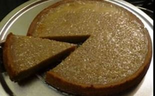

Sweet Potato Pudding

Description
Have for Thanksgiving Meal
Ingredients
- 2 1/2 lbs. medium sweet potatoes (about 3)
- 1/2 cup butter, at room temp
- 2 eggs
- 1 cup granulated sugar
- 1/2 cup milk
- 1 Tbs. self-rising cornmeal
- 1 tsp. vanilla extract
- 1/4 tsp. salt
- 1 cup pecan halves
- 1/2 cup packed brown sugar
Steps
- Heat oven to 400 degrees.
- Line baking sheet with foil.
- fierce potatoes.
- Bake on baking sheet until tender, 1 hr. Cool.
- Reduce oven temp, to 325 Degrees.
- Coat 8" square baking dish with cooking spray.
- Peel potatoes; place in mixing bowl.
- Add butter; mash until smooth.
- On medium speed, beat in eggs 1 at a time.
-
Add granulated sugar, milk, cornmeal, 1/2 tsp. vanilla extract and
salt;
- beat until smooth.
- Pour mixture into baking dish.
- Arrange pecans on top
- Sprinkle brown sugar, then remaining 1/2 tsp. vanilla over top.
- Bake until center is set and cooked through, about 45 min.
Servings:8 Active time: 25 min. Total time: 2 hrs., 40 min. Calories: 448
Protein: 5g Fat: 22g (9gm sat.) Chol,: 79mg Carbs.: 60g Sodium:235mg
Fiber:4g Sugar:45g